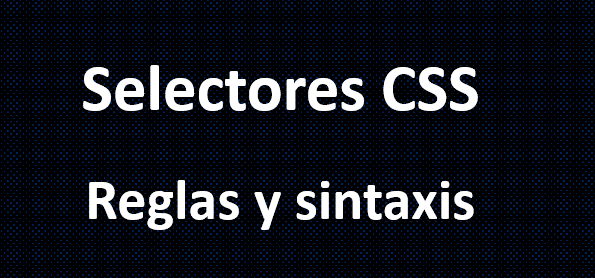
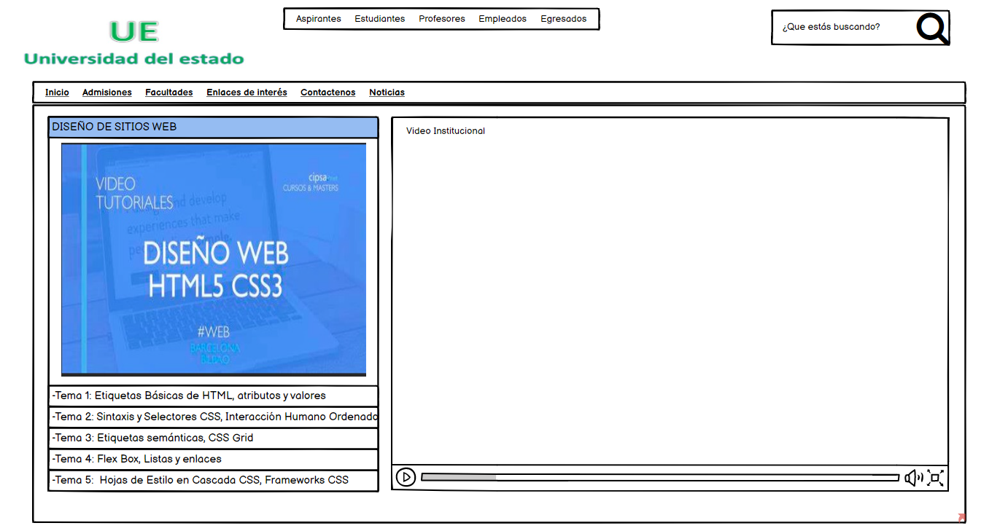

Sintaxis y Selectores CSS, Interacción Humano Ordenador

Qué es la sintaxis CSS
Cuando dotamos de estilo a un elemento HTML debemos establecer las reglas de estilo que se le aplicarán. Imagina que en un documento HTML existen una gran variedad de elementos como: textos, multimedia, formularios, listas, enlaces, etc. todos estos elementos poseen un estilo ¿Verdad? ¿Dónde van esos estilos? Generalmente en un documento CSS.¿Qué es una regla CSS?
Una regla CSS es la forma adecuada de escribir una instrucción mediante código CSS, es decir la manera en que se debe escribir código CSS para que este sea interpretado y aplicado correctamente por el navegador web.
Partes de una regla CSS
Una regla CSS está formada principalmente por un sector y una declaración, dentro de la declaración se encuentran las propiedades con su respectivo valor.
Selectores de tipo
Los selectores de tipo en CSS se refieren a los electores que apuntan a un tipo de elemento HTML como puede ser:
Selectores de id y clase
Este tipo de selectores en CSS apuntan a un elemento HTML identificado, es decir a un elemento HTML que tenga el atributo id o class.
Selectores descendientes
Los selectores descendientes en CSS sirven para apuntar elementos que se
encuentran dentro otros elementos mayores, de esta manera se puede colocar
un estilo específico a un elemento que se encuentra contenido en otro elemento HTML mayor.
Por ejemplo si tenemos un elemento dentro de un párrafo y este párrafo a la vez está dentro de una sección “primero” (bloque El proposito es ofrecer una panorámica de la evolución
de las interfaces persona–ordenador centrándose en las
tendencias actuales y en las alternativas al aún predominante modelo WIMP (Windows, Icons, Menus and
Pointing devices).Interacción Humano Ordenador
Bibliografía
Mi mockup
